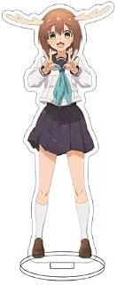
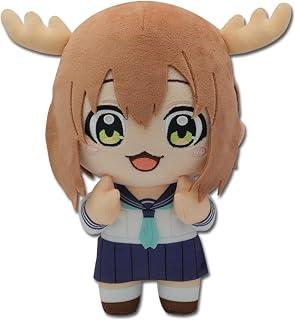
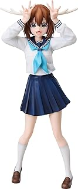
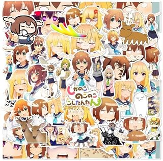
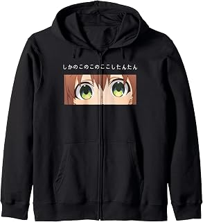
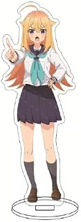
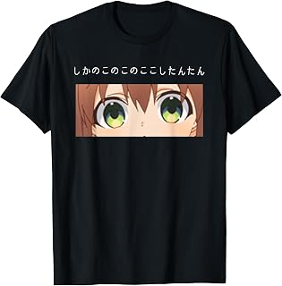
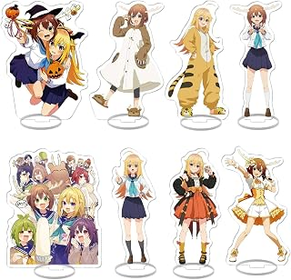
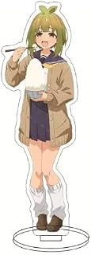

EDITORIAL REVIEW
WHY IT WORKS
My Deer Friend Nokotan is a deliberately strange comedy built around the collision between a perfect honor student and a girl with antlers. Its humor comes from refusing to behave normally, then treating that refusal as the new normal. The absurdity is the point, but the character contrast gives the chaos structure.
FINAL My Deer Friend Nokotan is a deliberately strange comedy built around the collision between a perfect honor student and a girl with antlers. Its humor comes from refusing to behave normally, then treating that refusal as the new normal. The absurdity is the point, but the character contrast gives the chaos structure. I recommend it to viewers who want a distinctive series with a clear emotional or genre identity.
My Deer Friend Nokotan is a deliberately strange comedy built around the collision between a perfect honor student and a girl with antlers. Its humor comes from refusing to behave normally, then treating that refusal as the new normal. The absurdity is the point, but the character contrast gives the chaos structure. I recommend it to viewers who want a distinctive series with a clear emotional or genre identity.
SHOP THE SERIES
Series merchandise selected from verified Amazon listings. Availability and pricing may change.

Acrylic stand15cm My Deer Friend Nokotan Acrylic Stand Figure Display Keychain (Shikanoko Noko)VIEW ON AMAZON → PlushGreat Eastern Entertainment My Deer Friend Nokotan — Anko Koshi Plush 8"VIEW ON AMAZON →
PlushGreat Eastern Entertainment My Deer Friend Nokotan — Noko Shikanoko Plush 8"VIEW ON AMAZON →
PVC figureFREEing My Deer Friend Nokotan: Noko Shikanoko 1:6 Scale PVC FigureVIEW ON AMAZON →
Sticker set50Pcs My Deer Friend Nokotan Chibi Cute Waterproof Sticker SetVIEW ON AMAZON →
ApparelMy Deer Friend Nokotan Shikanoko Song Anime Zip HoodieVIEW ON AMAZON →
Acrylic stand15cm My Deer Friend Nokotan Acrylic Stand Figure Display Keychain (Koshi)VIEW ON AMAZON →
ApparelMy Deer Friend Nokotan Shikanoko Song Anime T-ShirtVIEW ON AMAZON →
Acrylic stand setISaikoy Set of 8 My Deer Friend Nokotan Acrylic Stand FiguresVIEW ON AMAZON →
Acrylic stand15cm My Deer Friend Nokotan Acrylic Stand Figure Display Keychain (Bashame Meme)VIEW ON AMAZON →Affiliate disclosure: links use the Amazon Associates tag priscadezigns-20.